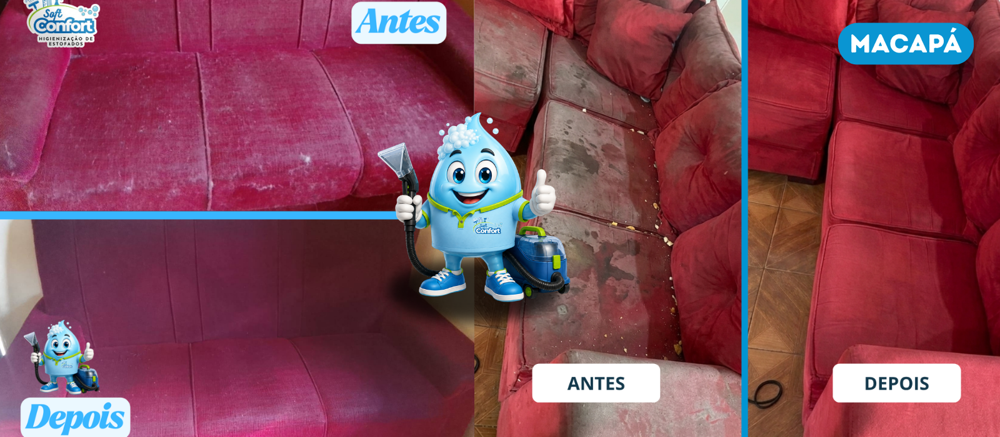

1
Envie uma foto
Mostre seu sofá pelo WhatsApp para receber uma avaliação inicial.
Limpeza profunda para remover a sujeira acumulada, ajudar no controle de odores e renovar a aparência do seu sofá — sem você precisar sair de casa.

Com o uso diário, o sofá acumula poeira, resíduos, pelos e odores. A higienização profissional alcança sujeiras que a limpeza superficial não consegue retirar e utiliza produtos adequados para cada tipo de tecido.
Mostre seu sofá pelo WhatsApp para receber uma avaliação inicial.
Escolha o melhor dia e horário para receber nossa equipe.
Realizamos a higienização profissional no local e orientamos sobre a secagem.
O tempo depende do tecido, da ventilação e das condições do dia. Após o serviço, orientamos como acelerar a secagem com segurança.
Muitas manchas podem ser reduzidas ou removidas, mas o resultado depende da origem, do tempo e do estado do tecido. Fazemos a avaliação antes do procedimento.
Sim. Informe seu bairro pelo WhatsApp para confirmarmos a disponibilidade e o melhor horário.
Envie uma foto do sofá pelo WhatsApp e receba uma avaliação sem compromisso.
💬 Solicitar orçamento agora